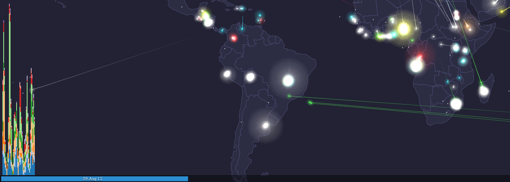

<!doctype html>
<html>
	<head>
		<meta charset="utf-8">
		<meta name="viewport" content="width=device-width, initial-scale=1.0, maximum-scale=1.0, user-scalable=no">

		<title>Política de software libre en Tecnologías de Información Geográfica - ADSIB</title>

		<link rel="stylesheet" href="css/reveal.css">
		<link rel="stylesheet" href="css/theme/beige.css">

		<!-- Theme used for syntax highlighting of code -->
		<link rel="stylesheet" href="lib/css/zenburn.css">

		<!-- Printing and PDF exports -->
		<script>
			var link = document.createElement( 'link' );
			link.rel = 'stylesheet';
			link.type = 'text/css';
			link.href = window.location.search.match( /print-pdf/gi ) ? 'css/print/pdf.css' : 'css/print/paper.css';
			document.getElementsByTagName( 'head' )[0].appendChild( link );
		</script>
	</head>
	<body>
		<div class="reveal">
			<div class="slides">
				<section data-markdown><script type="text/template">
						## Política de software libre en Tecnologías de Información Geográfica

						[Bolivia en mapas](http://geo.gob.bo/?BOLIVIA-EN-MAPAS-PRIMER-ENCUENTRO-NACIONAL-SOBRE-NODOS-GEOGRAFICOS-CON-SOFTWARE)

						[\#MapasBo](https://twitter.com/hashtag/MapasBo)

						Vicepresidencia del Estado - La Paz - 24/11/2016
				</script></section>
				<section data-markdown><script type="text/template">
						## Sylvain Lesage

						Director de la Agencia para el Desarrollo de la Sociedad de la Información en Bolivia - [ADSIB](http://adsib.gob.bo)
				</script></section>
				<section data-markdown><script type="text/template">
						## Índice

						1. Los datos
						2. El software
						4. Paseo en el mundo SIG libre
				</script></section>
				<section data-markdown><script type="text/template">
						## Datos

						>  Your software will go away. Your data is going to stay.

						[Arnulf Christl](http://arnulf.us/sevendipity/archives/59-About-Data-Lifetime.html)
				</script></section>
				<section data-markdown><script type="text/template">
						## Datos: vida larga
						
				</script></section>
				<section data-markdown><script type="text/template">
						## Datos

						La política del Estado boliviano es:

						- publicar los datos
						- en formato abierto
						- con metadatos
						- y con calidad
				</script></section>
				<section data-markdown><script type="text/template">
						
				</script></section>
				<section data-markdown><script type="text/template">
						
				</script></section>
				<section data-markdown><script type="text/template">
						
				</script></section>
				<section data-markdown><script type="text/template">
						## El Software

						- evoluciona rápidamente
						- se vuelve obsoleto
						- es solo una herramienta
				</script></section>
				<section data-markdown><script type="text/template">
						## Pero: software libre

						- tiene que manejar estándares abiertos
						- podemos ser aprender, contribuir y ser parte de la evolución
						- grados de confianza y de seguridad
				</script></section>
				<section data-markdown><script type="text/template">
						
				</script></section>
				<section data-markdown><script type="text/template">
						## Normativa

						| Fecha | Hito |
						| --- | --- |
						| 08/2011 | Ley 164 |
						| 12/2011 | Inicio de GeoBolivia |
						| 11/2013 | Decreto Supremo 1793 |
						| ¿12/2016? | Aprobación plan de implementación de software libre y estándares abiertos |
				</script></section>
				<section data-markdown><script type="text/template">
						## Recorrido por el software libre geográfico

						1. generar los datos
						2. conservar y actualizar
						3. difundir
						4. visualizar
				</script></section>
				<section data-markdown><script type="text/template">
						## Generar los datos

						- puntos, líneas, polígonos, trazas
						- imagenes raster
						- metadatos
				</script></section>
				<section data-markdown><script type="text/template">
						## Generar puntos, líneas, polígonos, trazas

						- en papel: [Field Papers](http://fieldpapers.org/), [Walking Papers](http://walking-papers.org/)
						
				</script></section>
				<section data-markdown><script type="text/template">
						## Generar puntos, líneas, polígonos, trazas

						- con aplicación móvil: [OsmAnd](http://osmand.net/), [Vespucci](http://vespucci.io/)

						
						
				</script></section>
				<section data-markdown><script type="text/template">
						## Generar puntos, líneas, polígonos, trazas

						- con aplicación móvil: [GeoPaparazzi](https://geopaparazzi.github.io/geopaparazzi/), [Stumbler](https://location.services.mozilla.com/apps)

						
						
				</script></section>
				<section data-markdown><script type="text/template">
						## Generar puntos, líneas, polígonos, trazas

						- con aplicación de escritorio: [QGis](http://qgis.org/)

						
				</script></section>
				<section data-markdown><script type="text/template">
						## Generar puntos, líneas, polígonos, trazas

						- con aplicación de escritorio: [gvSig](http://www.osgeo.org/gvsig)

						
				</script></section>
				<section data-markdown><script type="text/template">
						## Conservar los datos

						- bases de datos
						- herramientas de conversión
				</script></section>
				<section data-markdown><script type="text/template">
						## Bases de datos geográficas

						- Tiene que implementar [Simple Features](https://en.wikipedia.org/wiki/Simple_Features):

						[PostGIS](http://postgis.net/), [MySQL Spatial Extensions](http://dev.mysql.com/doc/refman/5.1/en/spatial-extensions.html), [SpatiaLite](https://www.gaia-gis.it/fossil/libspatialite/), [MongoDB](https://docs.mongodb.com/manual/applications/geospatial-indexes/)

						
				</script></section>
				<section data-markdown><script type="text/template">
						## Manipular y convertir los datos

						- Librerías [GDAL/OGR](http://www.gdal.org/), [GRASS GIS](https://grass.osgeo.org/)

						
				</script></section>
				<section data-markdown><script type="text/template">
						## Publicar

						- Servicios web, descargas, fondos de mapa: [GeoServer](http://geoserver.org/), [MapServer](http://www.mapserver.org/), [Mapnik](http://mapnik.org/)

						
				</script></section>
				<section data-markdown><script type="text/template">
						## Publicar

						- Metadatos: [Geonetwork](http://geonetwork-opensource.org/), [CKAN](http://ckan.org/features/)

						
				</script></section>
				<section data-markdown><script type="text/template">
						## Visualizar e incorporar

						- mapas "interactivos" y gráficos: [OpenLayers](http://openlayers.org/), [Leaflet](http://leafletjs.com/), [D3.js](https://d3js.org/), [Cesium](https://cesiumjs.org/)

						
				</script></section>
				<section data-markdown><script type="text/template">
						## Visualizar e incorporar

						- [Voronoi](https://mbostock.github.io/d3/talk/20111116/airports-all.html)
						- [Proyecciones](https://mbostock.github.io/d3/talk/20111018/azimuthal.html)
						- [Vientos](http://charts.animateddata.co.uk/ukwind/)
						- [Fuegos artificiales de datos](http://d3.artzub.com/wbca/)
				</script></section>
				<section data-markdown><script type="text/template">
						# ADSIB

						### Entidad certificadora pública

						Más información en https://firmadigital.bo.

						### Dominios .bo

						Más información en https://nic.bo.

						### Repositorio estatal de software libre

						Más información en https://softwarelibre.gob.bo.
				</script></section>
			</div>
		</div>

		<script src="lib/js/head.min.js"></script>
		<script src="js/reveal.js"></script>

		<script>
			// More info https://github.com/hakimel/reveal.js#configuration
			Reveal.initialize({
				history: true,

				// More info https://github.com/hakimel/reveal.js#dependencies
				dependencies: [
					{ src: 'plugin/markdown/marked.js' },
					{ src: 'plugin/markdown/markdown.js' },
					{ src: 'plugin/notes/notes.js', async: true },
					{ src: 'plugin/highlight/highlight.js', async: true, callback: function() { hljs.initHighlightingOnLoad(); } }
				]
			});
		</script>
	</body>
</html>
